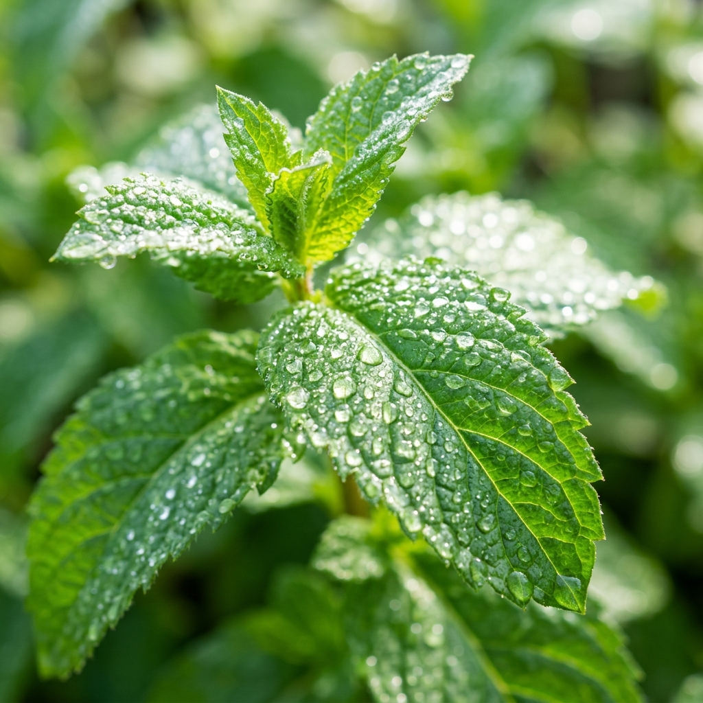

Shea Butter vs Cocoa Butter: Which Is Best for Soap Making?
A deep comparison of two of the most popular soap-making butters — their properties, skin benefits, and how each performs in cold-process formulation.
Read More
How to Price Natural Soap for Retail: Margins, MOQs & Market Positioning
A practical pricing guide for retailers stocking handmade soaps. Understand wholesale margins, recommended retail prices, and premium positioning strategies.
Read More
The Science of Aromatherapy Baths: What the Research Actually Says
Separating wellness trends from evidence. We review peer-reviewed studies on aromatherapy bath products and their measurable effects on stress, sleep, and skin.
Read More
2025 Trends in Natural Bath Products: What Wholesale Buyers Need to Know
Solid shampoo bars, waterless formulas, refillable packaging, and mushroom-extract soaps — the trends shaping the natural bath category in 2025.
Read MoreUnderstanding Saponification Values: The Chemistry Behind Perfect Soap
A beginner-friendly explanation of saponification — the chemical process that turns oils into soap — and why getting the values right matters for quality.
Read More
Activated Charcoal in Skincare: Benefits, Myths, and Formulation Tips
Is activated charcoal actually drawing toxins from skin? We look at the science, what it genuinely does in soap, and how to formulate with it correctly.
Read More
Private Label vs White Label: Which Is Right for Your Brand?
A clear breakdown of the difference between private label and white label soap products — costs, timelines, customisation levels, and which suits your business goals.
Read MoreRaw Honey in Skincare: Ancient Remedy, Modern Science
Honey's antibacterial, humectant, and wound-healing properties make it one of nature's most powerful skincare ingredients. How we use it in our soap range.
Read More
Eco Packaging in the Bath Industry: From Trend to Standard
How sustainable packaging went from a premium differentiator to a baseline expectation — and what wholesale buyers should be demanding from their suppliers in 2025.
Read More